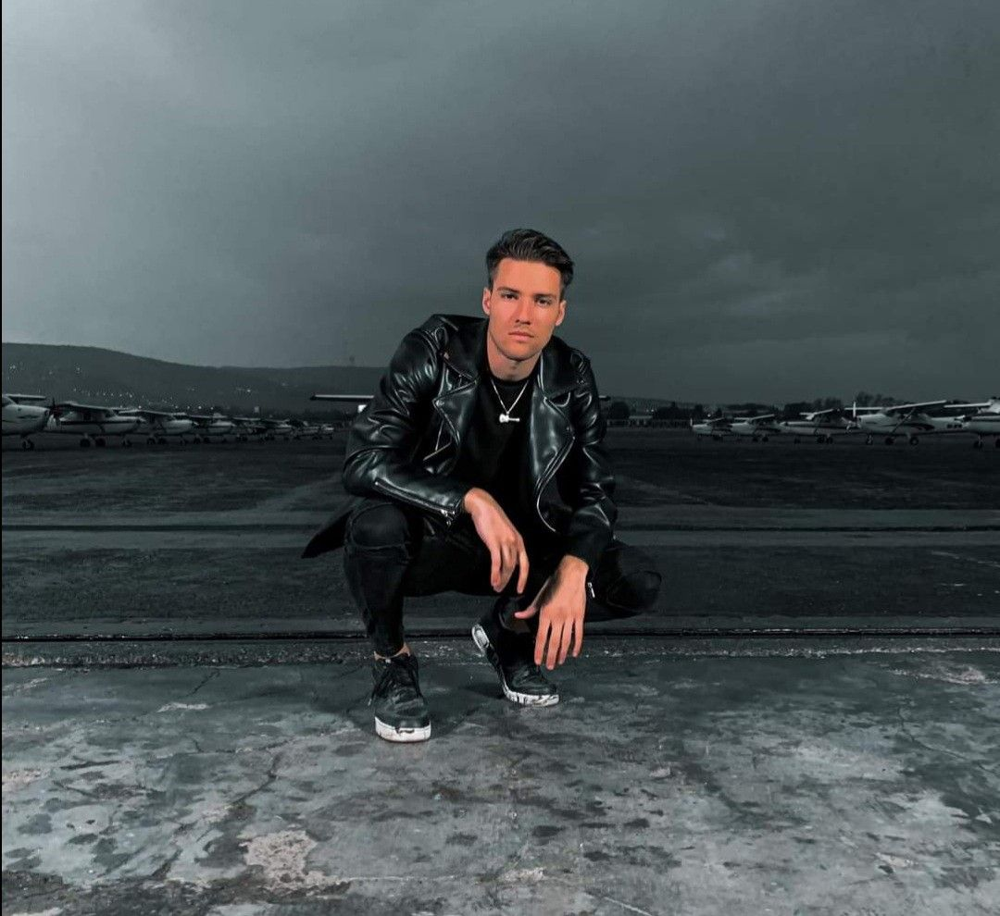

Valmar élete
Valkusz Milán
- Kispestről származik
- Augusztus 5.-én született
- 24 éves
- Milán a zenei pálya felé vette az irányt a teniszlabda helyett.
- Valkusz Milán szobája zenei stúdióként is működött.
- Barátnője: Apasi Petra
- Sportos családban nőtt fel.
- Valkusz Mátéval az öccsével régen nagyon szeretett teniszezni de most már nem látja értelmét a sportnak

Marics Peti
- Kispestről származik
- 1996. 10. 01-án született
- 26 éves
- Barátnője: Tóth Andi
- 2013-ban elkezdett focizni
- HONVÉD FC csapatban játszott
- A HONVÉD FC-ből átigazolták RAFC csapatba
- 53 mérkőzésen vett rész.
- Foci mellett teniszlabdázott is ráadásul Valkusz Milánnal.